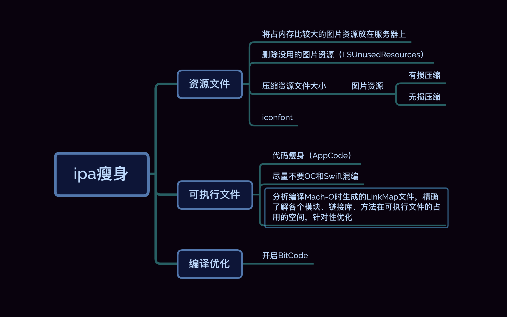

背景：
随着App版本的不断迭代，安装包会越来越大。安装包的大小是非常影响用户体验的。在推广App的时候，如果安装包很大，需要花费很多的时间来下载，会劝退很多用户。所以，我们应当使安装包尽量小。
Part01 - 瘦身方向
安装包组成
通过将导出的ipa包，用归档工具解压，在解压出的payload文件夹中得到App文件,查看App包含的内容，我们可以发现该文件主要包含以下内容：
- Exectutable-可执行文件
- Resources:资源文件
- 图片资源（Assets.car/bundle/png/jpg）
- 音/视频资源（mp/mp4）
- 静态网页资源：html/css/js
- 其他：文本/字体/证书等
- Framework:
- SwiftSupport: libSwiftxxx 等一系列 Swift 库
- 其他依赖库：Embeded Framework
- Plugins: Application Extensions
- appex：其组成大致与 ipa 包组成一致

安装包优化分析
在安装包中，可执行文件、图片资源和动态库占比较大，所以我们优化的重点就是这三个方向。
Part02 - 瘦身实施
图片资源优化
对大部分的App来讲，占比最大资源文件应该就是图片资源，所以资源文件优化的重点就是图片资源的优化。图片资源的优化可以从下面几个方向来进行。
1⃣️️将部分图片资源放到服务器上
将所有的图片资源都打到安装包中其实是不必要的，反而会造成安装包极速的增大，资源应该是按需加载的。除了一些常用的图片资源和一些如果放在线上非常影响用户体验的图片，其他的图片都应该放在资源服务器上，做好相应的图片缓存策略。
2⃣️清理没用的图片资源
随着版本的迭代，之前导入的一些图片资源已经不再使用，要做到及时的清理没用的图片资源。LSUnusedResources 是一款非常不错的无用图片查找工具，LSUnusedResources 的思路是，先获取图片文件(imageset, jpg, png, gif)集合A，然后搜索代码文件中所有字符串名称得到B，然后从A集合中排除集合B就得到未使用的图片资源。
3⃣️图片资源压缩
可以使用ImageOptim，通过优化压缩参数，移除无用的文件元数据和不必要的颜色配置来实现图片的无损压缩。我们UI切图使用的是蓝湖，蓝湖也支持图片压缩，如果没有使用过的同学可以尝试。
4⃣️iconfont
即使经过了图片转下载，无用图片删除，但是工程中的图片数量还是极为可观，其中各种各样的icon图标占了不少的数量。为了进一步减少图片数量，可以使用iconfont方案， iconfont优点：
- 矢量，缩放不失真
- 可以设置颜色
- 接入成本低，不需要引入额外的类库
iconfont可以解决因为icon大小，颜色不同而重新切图的窘境。iconfont是一个能减少图片数量的好方案。
可执行文件(Mach-O)优化
1⃣️LinkMap文件
但是通过MachOView，是不可以查看每个静态文件喝每个.o文件的大小，所以我们需要想办法量化文件的大小,我们可以通过分析LinkMap文件做到。
LinkMap文件是Xcode产生可执行文件的同时生成的链接信息，用来描述可执行文件的构造成分，包括代码段（TEXT）和数据段（DATA）的分布情况，可以根据这些信息进行针对性的优化。
LinkMap文件获取：
- 设置
Project->Build Settings->Write Link Map File为YES - 设置
Project->Build Settings->Path to Link Map File为LinkMap文件的输出路径
- 设置
LinkMap文件分析：
可以使用LinkMap - LinkMap.txt 文件解析工具分析每个类或者静态库的大小。通过查看LinkMap文件，各个静态库和文件的大小一目了然。
1、 在选用三方库的时候，尽量使用占用内存比较小的三方库，及时的移除不再使用的三方库。
2、分析占用内存比较大的类，删除类中没用的代码，减少冗余，保证用最简代码实现相应的功能，提升代码的复用性。
LinkMap可以在宏观上获取需要优化的部分，但是微观上，哪些是无用的类和方法，需要我们在 Mach-O层面进行分析，可以使用MachOView 对Mach-O文件进行分析。可以通过阅读这篇文章探秘Mach-O。 下面这张图是MachOView查看Mach-O文件的截图：
大家可以阅读:删除无用的类进行实践
2⃣️尽量不要使用OC和Swift混编
OC和Swift混编的时候，因为需要一些静态库的支持，会造成安装包急剧增大。所以，尽量选择一种语言开发，不要采用混编的方式。
3⃣️代码瘦身
可以使用AppCode进行代码的静态检查。AppCode 提供了非常强大的代码静态检查工具，使用Inspect Code，可以找到很多代码优化的地方:主要包括删除不用的类，不用的函数，重复的代码等。
编译优化
Xcode 支持编译器层面的一些优化优化选项，可以让我们介于更快的编译速度、更小的二进制大小和更快的执行速度之间自由选择想要进行的优化粒度。
1⃣️BitCode
可以在Xcode Target -> Build Settings -> Enable Bitcode 中打开 bitcode 选项
Bitcode可以作为中间产物一起提交AppStore。包含Bitcode配置的程序将会在AppStore上被编译和链接。Bitcode允许苹果在后期重新优化我们程序的二进制文件，而不需要我们重新提交一个新的版本到AppStore上。
在打包时，如果一些三方的依赖库没有开启 bitcode，或者开启了但是没有在最终引用的链接库中带有 bitcode，那么整个工程就无法用 bitcode 来编译了。
Part03- 参考
App瘦身小记
京东商城iOS App瘦身实践
APP安装包瘦身实践
iOS开发：Archive、ipa 和 App 包瘦身
APP体积优化